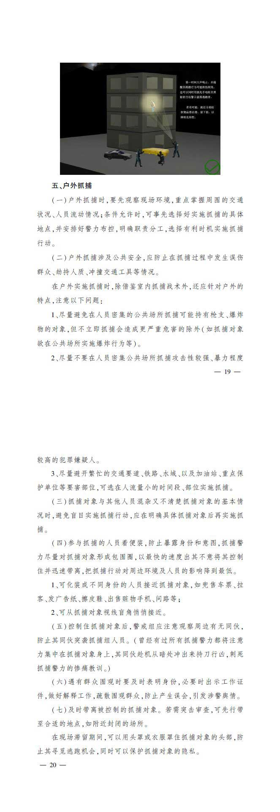
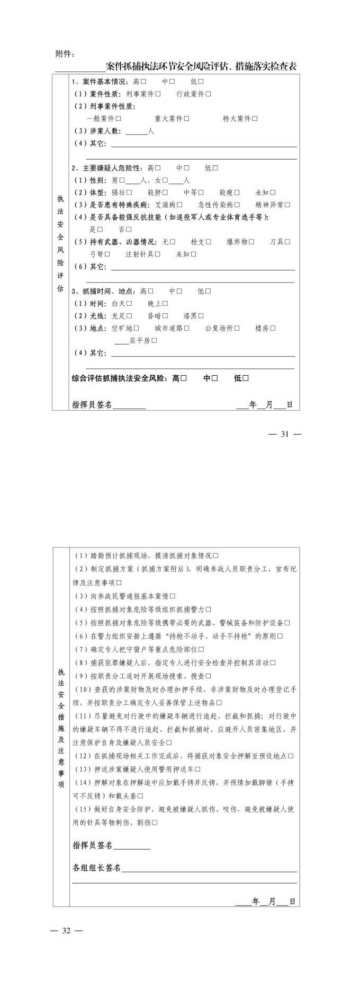
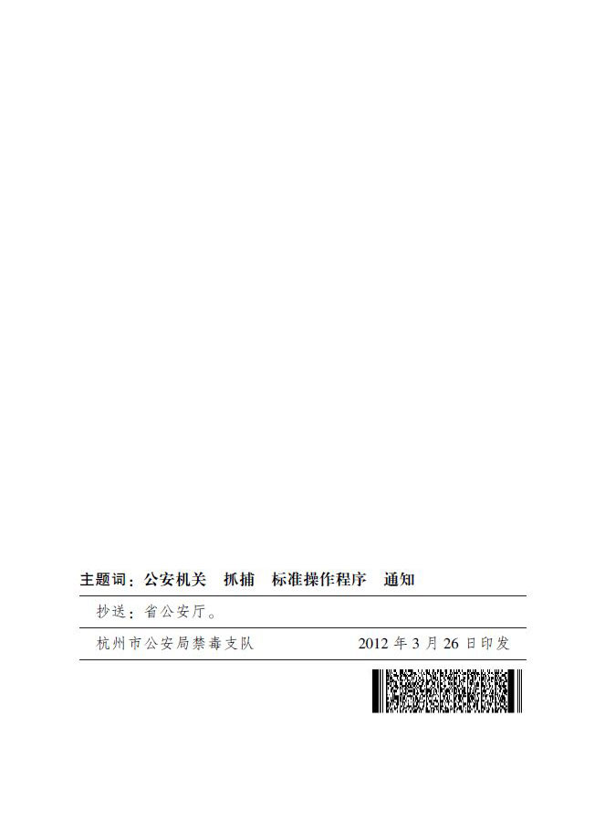

杭州市公安机关抓捕嫌疑人标准操作程序
发布日期：11时09分 2012年10月08日



重点提示：
抓捕工作应当牢记“安全”原则，坚持“加一”理念：一是抓捕前要尽可能地掌握情报，制定详细方案，抓捕对象危险程度等级不确定时，应上升一个等级配备警力与装备；二是抓捕实施要充分考虑潜在的危险，以最充分的准备，尽可能周全的预案应对可能出现的危险情况；三是现场抓获嫌疑人后，应时刻保持警惕，并始终注意其他未被发现的同伙。